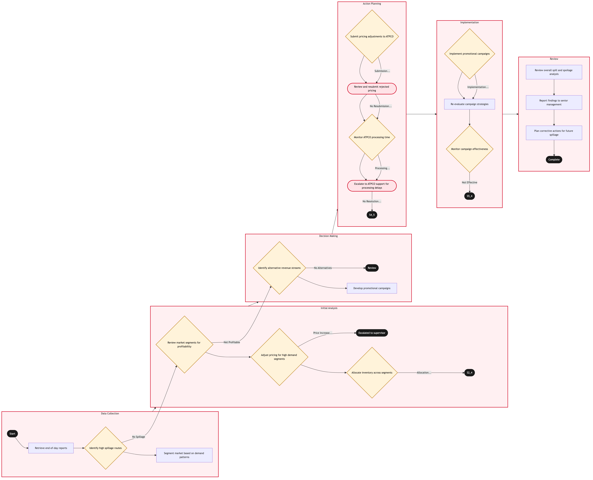

Updated 2026-08-20
Spill and Spoilage Analysis
Process flow
Click to zoom

Process steps
▼
Phase 1 — Data Collection
3 steps
| Step | Activity | Role | System | Input | Output | KPI | Dec | Exc | Pain point |
|---|---|---|---|---|---|---|---|---|---|
| 1.1 | Retrieve end-of-day reports | YYZ Operations Control Duty Manager | PROS Revenue ManagementB | Daily report from PROS | Inventory data for analysis | 10 minutes to retrieve and load data | N | N | Delays in report generation can lead to missed opportunities. |
| 1.2 | Identify high spillage routes | RM Analytics Analyst | PROS Revenue ManagementB | Inventory data | List of high spillage routes | 20 minutes to analyze | Y | N | Manual identification can be error-prone. |
| 1.3 | Segment market based on demand patterns | RM Analytics Analyst | PROS Revenue ManagementB | High spillage routes | Market segments | 30 minutes to segment | N | N | Overlooking segments can lead to missed opportunities. |
▼
Phase 2 — Initial Analysis
3 steps
| Step | Activity | Role | System | Input | Output | KPI | Dec | Exc | Pain point |
|---|---|---|---|---|---|---|---|---|---|
| 2.1 | Review market segments for profitability | RM Analytics Analyst | PROS Revenue ManagementB | Market segments | Profitability analysis report | 45 minutes to review | Y | N | Complex calculations can slow down the process. |
| 2.2 | Adjust pricing for high demand segments | RM Pricing Analyst | PROS Real-Time Dynamic PricingA | Profitability report | Pricing adjustments | 60 minutes to adjust | Y | N | Overpricing can lead to customer dissatisfaction. |
| 2.3 | Allocate inventory across segments | RM Allocation Analyst | PROS Revenue ManagementB | Pricing adjustments | Inventory allocation plan | 90 minutes to allocate | Y | N | Inefficient allocation can lead to further spillage. |
▼
Phase 3 — Decision Making
2 steps
| Step | Activity | Role | System | Input | Output | KPI | Dec | Exc | Pain point |
|---|---|---|---|---|---|---|---|---|---|
| 3.1 | Identify alternative revenue streams | RM Analytics Analyst | PROS Revenue ManagementB | Non-profitable segments | Alternative revenue strategies | 90 minutes to strategize | Y | N | Innovative solutions can take time to implement. |
| 3.2 | Develop promotional campaigns | Marketing Specialist | PROS Revenue ManagementB | Alternative revenue strategies | Promotional campaign plans | 60 minutes to develop | N | N | Campaign development can be resource-intensive. |
▼
Phase 4 — Action Planning
4 steps
| Step | Activity | Role | System | Input | Output | KPI | Dec | Exc | Pain point |
|---|---|---|---|---|---|---|---|---|---|
| 4.1 | Submit pricing adjustments to ATPCO | YYZ Operations Control Duty Manager | ATPCOB | Pricing adjustments | Fare filing confirmation | 30 minutes to submit | Y | Y | ATPCO processing delays can halt revenue generation. |
| 4.2 | Review and resubmit rejected pricing | YYZ Operations Control Duty Manager | PROS Revenue ManagementB | Rejection details | Resubmitted pricing adjustments | 10 minutes to review | N | Y | Multiple rejections can delay revenue realization. |
| 4.3 | Monitor ATPCO processing time | YYZ Operations Control Duty Manager | ATPCOB | Pricing confirmation | Processing status | 15 minutes to monitor | Y | N | Monitoring can be tedious and error-prone. |
| 4.4 | Escalate to ATPCO support for processing delays | YYZ Operations Control Duty Manager | ATPCO SupportU | Delay details | Resolution status | 1 hour to escalate and resolve | N | Y | Delays can lead to lost revenue. |
▼
Phase 5 — Implementation
3 steps
| Step | Activity | Role | System | Input | Output | KPI | Dec | Exc | Pain point |
|---|---|---|---|---|---|---|---|---|---|
| 5.1 | Implement promotional campaigns | Marketing Specialist | PROS Revenue ManagementB | Campaign plans | Active promotional campaigns | 2 hours to implement | Y | N | Implementation can be complex and time-consuming. |
| 5.2 | Re-evaluate campaign strategies | Marketing Specialist | PROS Revenue ManagementB | Campaign failure details | Updated campaign plans | 1 hour to reevaluate | N | N | Reevaluation can delay revenue generation. |
| 5.3 | Monitor campaign effectiveness | Marketing Specialist | PROS Revenue ManagementB | Campaign data | Effectiveness report | 30 minutes to monitor | Y | N | Monitoring can be resource-intensive. |
▼
Phase 6 — Review
3 steps
| Step | Activity | Role | System | Input | Output | KPI | Dec | Exc | Pain point |
|---|---|---|---|---|---|---|---|---|---|
| 6.1 | Review overall spill and spoilage analysis | RM Analytics Analyst | PROS Revenue ManagementB | All reports and data | Final analysis report | 1 hour to review | N | N | Reviewing all data can be time-consuming. |
| 6.2 | Report findings to senior management | RM Analytics Analyst | PROS Revenue ManagementB | Final analysis report | Management presentation | 30 minutes to prepare | N | N | Preparing a clear presentation can be challenging. |
| 6.3 | Plan corrective actions for future spillage | RM Analytics Analyst | PROS Revenue ManagementB | Management feedback | Corrective action plan | 45 minutes to plan | N | N | Planning can be complex and time-consuming. |
Swim lanes
YYZ Operations Control Duty Manager1.1 4.1 4.2 4.3 4.4
RM Analytics Analyst1.2 1.3 2.1 3.1 6.1 6.2 6.3
RM Pricing Analyst2.2
RM Allocation Analyst2.3
Marketing Specialist3.2 5.1 5.2 5.3
Systems touched
PROS Revenue ManagementBPROS Real-Time Dynamic PricingAATPCOBATPCO SupportU
Key performance indicators
- Data retrieval within 10 minutes
- Analysis completed within 60 minutes
- Pricing adjustments submitted within 30 minutes
- Promotional campaigns implemented within 2 hours
- Final review completed within 1 hour
Risks and control points
- Delays in ATPCO fare filing can halt revenue generation
- Manual identification of high spillage routes can be error-prone
- Overpricing can lead to customer dissatisfaction
- Campaign development and implementation can take time
- Monitoring multiple processes can be resource-intensive
Air Canada Process Wiki — process and systems reference compiled from public sources
for IT Application Management and User Support pre-sales discovery.
Built 2026-08-20. Every system carries an evidence tier: tier C is an industry pattern and tier U is an open
question, and neither should be asserted as fact about Air Canada without confirmation in discovery.
Not affiliated with or endorsed by Air Canada. Air Canada, Aeroplan and Altitude are trademarks of Air Canada.